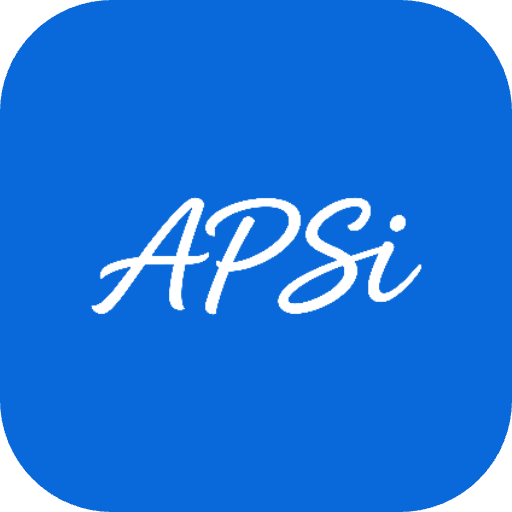

Logo APSi — integração ao cabeçalho
A logo entra no lugar do wordmark de texto do cabeçalho, mantendo o subtítulo, o selo de privacidade e o alternador de tema. Fundo removido (PNG transparente, recorte justo) e cor alinhada ao azul de destaque do Primer — #0969da no tema claro, #4493f8 no escuro — para conversar com links, botões e valores clínicos do app.